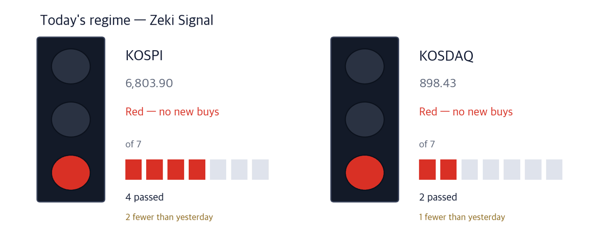

KOSPI 6,803.90 -1.98% | KOSDAQ 898.43 -2.34% | Zeki Signal Red |

Green favours buying, yellow says wait, red says hold off. The cells count how many of seven conditions are met - more cells mean the advance is broader. At the October 7 close the KOSPI meets 4 of 7 and reads red; the KOSDAQ meets 2 of 7 and reads red. KOSPI: 2 fewer than yesterday. KOSDAQ: 1 fewer than yesterday.
Hold off — the stance the signal implies.
Seoul fell across the board on October 7. The KOSPI dropped 1.98% to 6,803.90 and the KOSDAQ 2.34% to 898.43. The KOSDAQ slipped back below 900 a day after regaining it.
Foreign investors sold a net 3.11 trillion won on the main board. Institutions sold 861.3 billion won, while individuals bought 3.26 trillion won. Profit-taking hit chip stocks that had risen fast. (Korea Economic Daily, Oct 8)
Samsung Electronics finished on October 6 a buyback that had been absorbing more than 500 billion won a day. Even so it fell less than the KOSPI on October 7, as both buyers and sellers waited for its third-quarter results on October 8.
In New York on October 6 the Nasdaq Composite rose 0.45% to 27,600. It set an intraday record but closed in the lower part of its range. The S&P 500 rose to 7,819 and the Dow to 51,521. But SK Hynix's US depositary receipts fell 6.39%, which weighed on Seoul's chip stocks at the open. (Investor's Business Daily, Oct 6)
Here is what to do now, before Seoul opens on Thursday.
① Cosmetics rose in a falling market. On October 7 AmorePacific rose 3.98% and Cosmax 3.50%. September cosmetics exports passed 1.2 billion dollars for the first time.
② Gaon Cable hit an all-time intraday high, then closed down 7.25%. Some analysts say the share price has run ahead of profits.
③ Samsung reports on the morning of October 8, and October 9 is the Hangul Day holiday. With one session before the break, whether foreign selling continues matters.
The number is 1.213 billion dollars, Korea's cosmetics exports in September, up 30% from a year earlier. It is the first month above 1.2 billion dollars. Exports to the US rose 21% and to China 9%. (Hana Securities data, Maeil Business Newspaper, Oct 8)
| Date | What to watch | What it changes |
|---|---|---|
| Thu Oct 8 | Samsung Electronics' preliminary Q3 results | Shows whether profit can support the shares now the buyback has ended. Meritz Securities expects operating profit of 106.1 trillion won |
| Fri Oct 9 | Hangul Day holiday | Seoul is closed while New York trades; the week's sessions end on October 8 |
| Tue Oct 13 | Apple's smart-home devices unveiled; JPMorgan and Goldman Sachs Q3 results in the US | Shows the products made with LG Electronics; big US banks open the earnings season |
On October 7, as the indexes fell close to 2%, cosmetics stocks rose together. Hankook Cosmetics Manufacturing rose 11.9% and Cosmecca Korea 5.98%. Contract makers rose along with the brands.
Big US retailers, Amazon among them, start their shopping events this week. Adobe expects US online spending in October to rise from a year earlier to 95.8 billion dollars. (Maeil Business Newspaper, Oct 8)
| Close | Day | Week | 20 sessions |
|---|---|---|---|
| 138,300 won | +3.98% | -2.67% | -3.49% |
| 3 months | Zeki Strength | From 1-yr high |
|---|---|---|
| +14.11% | 68 | -18.17% |
| Who | AmorePacific, the maker of Sulwhasoo and Laneige. |
| What | Closed at 138,300 won on October 7, up 3.98%, 18.2% below its one-year high of 169,000 won on February 9. |
| When | It rose on October 7, after September cosmetics export data came out. |
| Where | Listed on the main board. It trades about 29.0bn won a day. |
| Why | September exports rose 21% to the US and 9% to China, lifting hopes for a seller in both markets. |
| How | Volume on October 7 was 0.82 times the 50-day average. That day saw foreign net buying and institutional net buying. |
| Close | Day | Week | 20 sessions |
|---|---|---|---|
| 310,500 won | +3.50% | +11.49% | +12.70% |
| 3 months | Zeki Strength | From 1-yr high |
|---|---|---|
| +84.49% | 91 | -2.97% |
| Who | Cosmax, which develops and makes cosmetics for other brands. |
| What | Closed at 310,500 won on October 7, up 3.50%, 3.0% below its one-year high of 320,000 won on October 7. |
| When | It rose on October 7, after September cosmetics export data came out. |
| Where | Listed on the main board. It trades about 29.6bn won a day. |
| Why | The more the brands sell, the more orders reach the company that makes their products. |
| How | Volume on October 7 was 1.52 times the 50-day average. That day saw foreign net selling and institutional net buying. |
Gaon Cable's market value passed 10 trillion won intraday on October 7. Its US unit supplies busways, which distribute power inside data centers, and medium-voltage cable. First-half busway sales of 114.1 billion won already beat last year's full 78.3 billion won.
In the afternoon AI data-center stocks met profit-taking and it closed lower. It trades at 46.7 times forward 12-month earnings. Yuanta Securities expects next year's operating profit of 260.9 billion won. (Korea Economic Daily, Oct 8)
| Close | Day | Week | 20 sessions |
|---|---|---|---|
| 307,000 won | -7.25% | -2.54% | +44.81% |
| 3 months | Zeki Strength | From 1-yr high |
|---|---|---|
| +10.63% | 99 | -14.60% |
| Who | Gaon Cable, an LS group cable maker whose US unit supplies power distribution gear to data centers. |
| What | Closed at 307,000 won on October 7, down 7.25%, 14.6% below its one-year high of 359,500 won on October 7. |
| When | On October 7 it hit an all-time intraday high and its market value passed 10 trillion won. |
| Where | Listed on the main board. It trades about 93.6bn won a day. |
| Why | AI servers use more power, lifting orders for busways and medium-voltage cable inside data centers. |
| How | Volume on October 7 was 1.93 times the 50-day average. That day saw foreign net selling and institutional net selling. |
On October 7 the drug regulator approved Hanmi Pharm's obesity drug Efpe. It is the first GLP-1 obesity drug developed in Korea. In the final trial of 448 Koreans, weight fell an average 9.75% over 40 weeks.
Mounjaro and Wegovy split the Korean market; Mounjaro's sales in Korea were 744.3 billion won in the first half. Efpe is expected to cost about 200,000 won a month, below both. (Korea Economic Daily and Maeil Business Newspaper, Oct 8)
| Close | Day | Week | 20 sessions |
|---|---|---|---|
| 534,000 won | +0.95% | +6.37% | +12.78% |
| 3 months | Zeki Strength | From 1-yr high |
|---|---|---|
| +15.71% | 77 | -17.47% |
| Who | Hanmi Pharm, developer of Efpe, the first Korean-made GLP-1 obesity drug. |
| What | Closed at 534,000 won on October 7, up 0.95%, 17.5% below its one-year high of 647,000 won on February 24. |
| When | The drug regulator approved sales on October 7; it could launch as early as the end of October. |
| Where | Listed on the main board. It trades about 53.4bn won a day. |
| Why | A cheaper home-grown drug enters a Korean obesity market split between Mounjaro and Wegovy. |
| How | Volume on October 7 was 1.45 times the 50-day average. That day saw foreign net selling and institutional net selling. |
Apple is building smart-home devices such as video doorbells, door locks and security cameras with LG Electronics. LG will make and sell them, and Apple unveils the products on October 13.
The price went the other way. LG Electronics fell 10.30% on October 7, after third-quarter operating profit of 781.8 billion won, reported the same day, fell short of expectations. Sales start months from now, so any profit is far off; we do not cover it as a name today.
| Name | ①up 20d | ②Str. 90+ | ③For. buy | ④Inst. buy | Met | Weight |
|---|---|---|---|---|---|---|
| AmorePacific (090430) | X | X | X | O | 1/4 | Needs checking |
| Cosmax (192820) | O | O | X | O | 3/4 | Grounded |
| Gaon Cable (000500) | O | O | O | O | 4/4 | Well grounded |
| Hanmi Pharm (128940) | O | X | X | O | 2/4 | Needs checking |
The four columns ask: ① up over 20 sessions ② Zeki Strength 90 or higher ③ foreign net buying over 20 sessions ④ institutional net buying over 20 sessions. The count of O sets the weight of evidence. Only Gaon Cable clears all four. Zeki Strength is below 90 for AmorePacific and Hanmi Pharm. Foreign investors sold AmorePacific, Cosmax and Hanmi Pharm over 20 sessions.
| Name | Foreign / Inst, 20d | Volume | How to read it |
|---|---|---|---|
| Hanon Systems 018880 | F -7.8 · I +10.5 | 4.50x | Caution — Only institutions bought; foreigners sold |
| SFASemicon 036540 | F +15.6 · I -5.6 | 2.08x | Caution — Only foreigners bought; institutions sold |
| Woori Financial Group 316140 | F +19.6 · I +2.0 | 1.08x | Check✓ — Both bought, but on thin volume |
| TaihanFiberoptics 010170 | F +3.0 · I +0.8 | 0.93x | Check✓ — Both bought, but on thin volume |
| Korean Air Lines 003490 | F +7.1 · I +0.6 | 0.70x | Check✓ — Both bought, but on thin volume |
| SamsungHvyInd 010140 | F -7.6 · I -1.6 | 0.81x | Wait — Both sides selling, but volume has dried up |
| Doosan Enerbility 034020 | F -7.1 · I -1.0 | 0.73x | Wait — Both sides selling, but volume has dried up |
| Daewoo Engineering & Construction 047040 | F -4.7 · I -3.4 | 0.62x | Wait — Both sides selling, but volume has dried up |
| LG Display 034220 | F -8.5 · I -1.5 | 0.57x | Wait — Both sides selling, but volume has dried up |
| Netmarble 251270 | F -11.1 · I -0.2 | 0.46x | Wait — Both sides selling, but volume has dried up |
| Stock | Net shares, 20 days | Zeki Strength | 20 trading days | As of |
|---|---|---|---|---|
| Woori Financial Group 316140 | +19,566,704 | 70 | +0.6% | 10-07 |
| SFASemicon 036540 | +15,606,321 | 96 | +102.7% | 10-07 |
| Korean Air Lines 003490 | +7,114,747 | 78 | +1.5% | 10-07 |
| Koh Young 098460 | +3,778,880 | 88 | +28.5% | 10-07 |
| TaihanFiberoptics 010170 | +3,021,957 | 99 | +36.2% | 10-07 |
| Stock | Net shares, 20 days | Zeki Strength | 20 trading days | As of |
|---|---|---|---|---|
| Samsung Electronics 005930 | -20,648,802 | 93 | +5.3% | 10-07 |
| Netmarble 251270 | -11,089,037 | 13 | -5.1% | 10-07 |
| LG Display 034220 | -8,525,712 | 10 | -9.5% | 10-07 |
| SK Hynix 000660 | -7,939,489 | 96 | +4.1% | 10-07 |
| Hanon Systems 018880 | -7,835,264 | 69 | +9.5% | 10-07 |
| Stock | Net shares, 20 days | Zeki Strength | 20 trading days | As of |
|---|---|---|---|---|
| Samsung Electronics 005930 | +12,912,550 | 93 | +5.3% | 10-07 |
| Hanon Systems 018880 | +10,503,249 | 69 | +9.5% | 10-07 |
| Macquarie Korea Infrastructure 088980 | +4,831,696 | 36 | -1.4% | 10-07 |
| PanOcean 028670 | +2,499,720 | 84 | +4.0% | 10-07 |
| FADU 440110 | +2,354,965 | 96 | +21.7% | 10-07 |
| Stock | Net shares, 20 days | Zeki Strength | 20 trading days | As of |
|---|---|---|---|---|
| SFASemicon 036540 | -5,616,150 | 96 | +102.7% | 10-07 |
| Daewoo Engineering & Construction 047040 | -3,350,733 | 96 | +2.2% | 10-07 |
| Koh Young 098460 | -2,181,938 | 88 | +28.5% | 10-07 |
| NAVER 035420 | -2,117,288 | 31 | -11.9% | 10-07 |
| YCC 232140 | -2,032,771 | 80 | +44.0% | 10-07 |
Even when the story and the price agree, we check the money separately. The table asks whether October 7 volume actually cleared the bar to beat (the 50-day average).
| Name | Cleared? | Flows (as of) | How to read it |
|---|---|---|---|
| AmorePacific (090430) | 0.82x ✗ | F buy · I buy (10/7) | Check — Both bought, but on thin volume |
| Cosmax (192820) | 1.52x ✓ | F sell · I buy (10/7) | Caution — Only institutions bought; foreigners sold |
| Gaon Cable (000500) | 1.93x ✓ | F sell · I sell (10/7) | Caution — Both sides selling as volume rises |
| Hanmi Pharm (128940) | 1.45x ✓ | F sell · I sell (10/7) | Caution — Both sides selling as volume rises |
"Cleared?" is October 7 volume divided by the 50-day average; above 1x earns a ✓. 3 of 4 traded above normal volume on October 7.
| Weight of evidence | Names | Beat KOSPI | Winners led by | Losers trailed by | All averaged |
|---|---|---|---|---|---|
| Well grounded | 16 | 13 / 16 | +8.84%p | -4.35%p | +6.37%p |
| Grounded | 16 | 8 / 16 | +6.66%p | -5.58%p | +0.54%p |
| Needs checking | 35 | 11 / 35 | +7.04%p | -4.16%p | -0.64%p |
| Thin | 1 | 1 / 1 | +7.22%p | none | +7.22%p |
| No basis | 2 | 0 / 2 | none | -5.15%p | -5.15%p |
| Excluded | 1 | 1 / 1 | +4.53%p | none | +4.53%p |
| Well grounded 16 | +6.37%p | ||||||
| Grounded 16 | +0.54%p | ||||||
| Needs checking 35 | −0.64%p | ||||||
| Thin 1 | +7.22%p | ||||||
| No basis 2 | −5.15%p | ||||||
| Excluded 1 | +4.53%p |
The centre line is KOSPI. Right is ahead, left is behind. The grey number is how many names are in that band.
Of 16 Well grounded names, 13 beat KOSPI. Those 13 led by 8.8%p on average; the 3 that lost trailed by 4.4%p. All together: +6.4%p.
After 20 sessions (about a month): results first arrive on Oct 14; they are added here as a table as they fill.
After 60 sessions (about three months): results first arrive on Dec 9; they are added here as a table as they fill.
Verdict. Once both markets together reach 60 cases for a window, we run the test fixed in advance and print what it says. 5 sessions, 161 cases — Not shown to beat the index. But higher-grade names did better. (48.4% beat the index) · 20 sessions: 0 of 60 · 60 sessions: 0 of 60
| When | What to watch | What it means |
|---|---|---|
| First 30 minutes (09:00–09:30) | Do AmorePacific and Cosmax open above their October 7 closes? | Shows whether money keeps flowing into the one sector that rose in a falling market |
| During the session | Do foreign investors sell less on the main board after Samsung's results? | Shows whether the heavy foreign selling of October 7 was a one-day event |
| Last 30 minutes (15:00–15:30) | Does the KOSDAQ close above 900? | Shows whether 900 is regained on the last session before the holiday |
Seoul trades on October 8 and closes on October 9 for Hangul Day. Samsung's preliminary third-quarter results come on the morning of October 8. On October 13 Apple unveils its smart-home devices and big US banks report.
This is the Rex Way, ZekiRex™